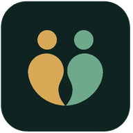

pertoApoio com consentimento, em qualquer direção
Quem está apostando mais do que gostaria pode chamar alguém de confiança. Quem se preocupa com alguém pode convidar essa pessoa pra começar. Os dois caminhos levam ao mesmo lugar.
Você está apostando mais do que queria.
Convide alguém de confiança pra te acompanhar, no seu ritmo e sem julgamento.
Alguém que você ama está apostando demais.
Convide essa pessoa pra conhecer o Perto. Ela decide se aceita. Sempre.
O Perto está em construção. Deixe seu e-mail e te avisamos quando estiver pronto para testar. Sem spam, sem compromisso.
Gratuito para entrar na lista. Você pode pedir pra sair quando quiser.
O tamanho do problema
O jogo patológico é reconhecido pela OMS como transtorno desde 2018. No Brasil, ele já chega perto de quem você ama, e quase sempre a família percebe tarde.
Como funciona
O convite pode partir de quem está apostando ou de quem se preocupa, e só começa a valer quando os dois aceitam.
O que tem dentro
O essencial não tem custo. A camada paga existe pra quem quer ir além do convite e do check-in.
Complementar, não concorrente
Desde dezembro de 2025 existe a Plataforma Centralizada de Autoexclusão do Governo Federal: gratuita, e bloqueia o CPF em todas as casas de apostas licenciadas do país de uma vez.
Só tem um detalhe: só a própria pessoa que aposta pode pedir esse bloqueio. Quem ama e se preocupa não tem esse botão. O Perto existe pra esse espaço entre os dois: ajuda a pessoa a chegar até essa decisão, e continua ao lado dela depois, porque o bloqueio oficial não cobre sites ilegais nem cuida da parte emocional do dia a dia.
Além do dinheiro
A ludopatia é reconhecida como transtorno pela Organização Mundial da Saúde. Famílias de quem convive com isso carregam um desgaste emocional real: culpa, vergonha, noites em claro, a sensação de estar sempre um passo atrás. Não existe um jeito fácil de lidar com isso sozinho, e ninguém deveria precisar.